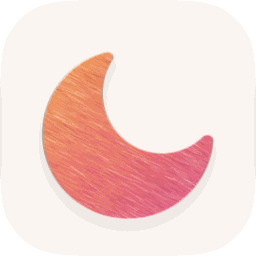

Orbe — Confidentialité
App pour iPhone et iPad · mise à jour le 30/10/2026
Orbe affiche les sites que tu visites. Ton historique, tes onglets et tes notes restent sur ton appareil.
En bref
- Aucune publicité, aucun compte à créer, aucun traçage publicitaire.
- Aucune statistique d'utilisation et aucun rapport de plantage automatique ne sont envoyés par cette version.
- Rien n'est vendu ni partagé avec qui que ce soit.
- Tes données restent sur ton appareil, sauf ce qui est listé dans « Connexions ».
Ce que l'app garde sur ton appareil
- Historique, onglets, favoris, notes : enregistrés sur l'appareil.
- Clés d'IA facultatives : rangées dans le trousseau de l'appareil, envoyées seulement au fournisseur choisi.
- Synchronisation facultative avec Orbe sur Mac (favoris, onglets, historique récent) : activée seulement si tu relies tes appareils par QR code, chiffrée de bout en bout avant l’envoi au serveur de synchro de Traffik (Cloudflare), illisible pour le serveur.
- Les pages que tu visites sont chargées directement depuis les sites, comme dans Safari.
Connexions
- Les sites que tu ouvres et le moteur de recherche que tu choisis (comme tout navigateur).
- Icônes des sites : le nom du site est demandé au service d'icônes de DuckDuckGo.
- Listes de blocage (EasyList, EasyPrivacy, Liste FR), téléchargées de temps en temps.
- Assistant : l'IA de l'appareil par défaut ; si tu ajoutes ta clé, le texte de ta question (et de la page si tu le demandes) part chez ce fournisseur (Anthropic, Sunra, ou Ollama chez toi).
- Synchronisation avec Orbe Mac, seulement si tu scannes son QR code : chiffrée de bout en bout, le serveur de Rayane ne peut rien lire.
Autorisations demandées
- Appareil photo et micro : pour scanner le QR code du Mac, pour la dictée de l'assistant (transcrite sur l'appareil) et pour les sites qui le demandent (visio), avec ton accord.
- Position : seulement pour les sites qui la demandent, avec ton accord.
- Photos (ajout seulement) : pour enregistrer une image d'une page.
Chaque autorisation est demandée au moment où elle sert ; tu peux la retirer à tout moment dans Réglages › Confidentialité et sécurité.
TestFlight et Apple
Cette app est distribuée par TestFlight, le service de test d'Apple. Si tu envoies un commentaire ou une capture depuis TestFlight, Apple les transmet à Rayane avec ton adresse e-mail TestFlight ; Apple peut aussi lui transmettre les rapports de plantage que tu acceptes de partager. Voir la politique de confidentialité d'Apple pour TestFlight.
Supprimer tes données
Supprime l'app : tout ce qu'elle a enregistré sur l'appareil disparaît avec elle. Les clés que tu as saisies peuvent aussi être effacées depuis ses réglages.
Contact
Une question ou une demande ? Contacte Rayane directement.